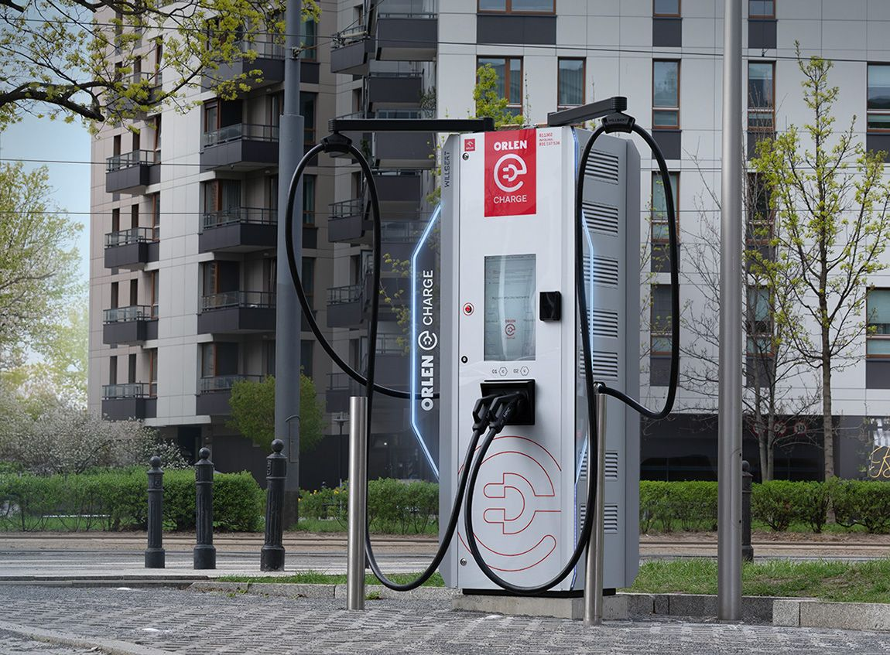
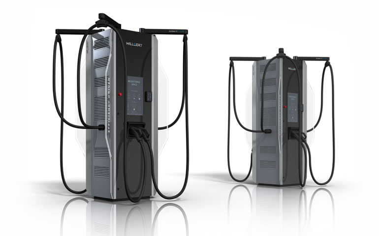
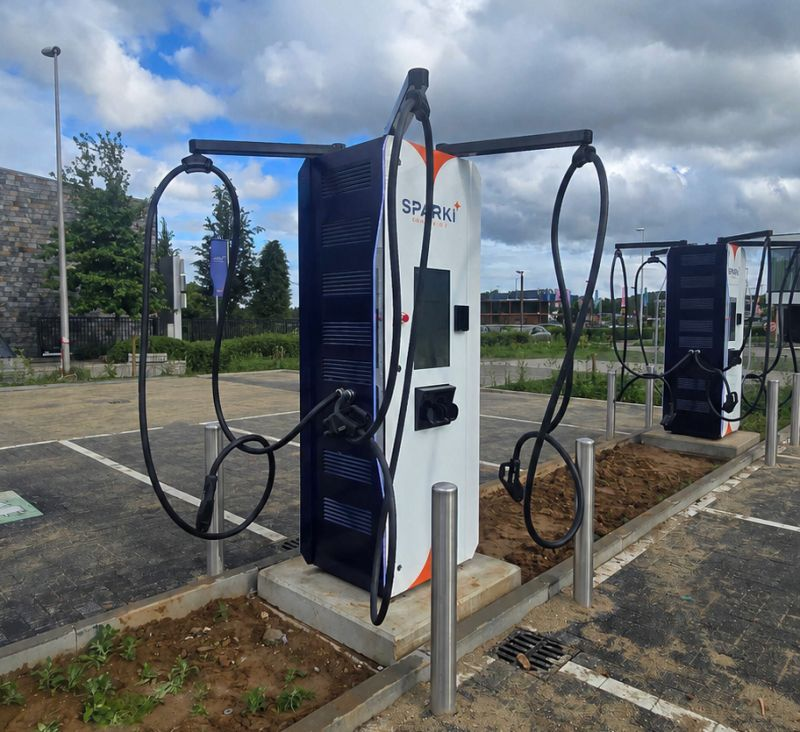

Amber II 720 kW — EV charging station
Role: Senior Mechanical Engineer / Product Lead
Development of the innovative Amber II 720 kW EV charging station
I joined when the startup employed only seven people, operated a small laboratory of approximately 200 m², and the Amber II charger existed only as an industrial-design concept. Working with one other mechanical engineer, we completed the charger's mechanical design in just six months. My responsibilities included the power module, S-HUB intelligent power-allocation system, busbar routing throughout the charger, controller placement and cable routing. Over the next 2.5 years I was responsible for root-cause analysis of issues within my systems, engineering changes, sourcing new suppliers, designing rapid-assembly fixtures and equipment, and continuously improving the product. I also established an information flow for efficient revision management, built a PLM system in Notion according to management requirements, and provided ongoing production support. The greatest challenges were EMC and component cooling, both of which I successfully resolved.



Responsibilities included:
- Designing more than 70% of the mechanical components in the first product version.
- Leading mechanical design throughout the full NPI/NPD cycle — from concept and 3D design in SolidWorks through prototyping and testing to series-production launch.
- Designing the 50 kW power module and S-HUB intelligent power-allocation system for the 720 kW charging station.
- Designing power-cable routes, busbars and the placement of controllers and other internal components.
- Designing sheet-metal, machined, welded and 3D-printed components, including parts supporting production and assembly.
- Performing GD&T and tolerance-stack analyses for key mechanical assemblies.
- Supervising prototype assembly and actively supporting the series-production launch.
- Resolving design issues through Root Cause Analysis, designing subsequent product revisions and continuously improving existing solutions.
- Working with suppliers, qualifying new vendors and optimising manufacturing cost and technology.
- Designing assembly stations and tools that improved production and reduced assembly time.
- Contributing to EMC projects and effective cooling design for high-power components.
- Implementing DFMA, Design for Reliability and FMEA in product development.
In addition to mechanical design, I was responsible for:
- Acting as Product Lead for the modules and coordinating their development from prototype to series production.
- Managing the development backlog and planning product iterations.
- Designing and implementing PLM documentation and revision-management systems and digitising engineering processes with Notion.
- Building an information flow between R&D and production to improve engineering-change management.
- Defining and optimising manufacturing procedures and R&D processes that enabled the organisation to scale.
- Providing ongoing production support, analysing assembly issues and implementing corrective actions.
The project gave me experience not only as a mechanical designer but also as a person responsible for product development and process organisation in a fast-growing technology startup. I was responsible for system development and reliability, cooperation with production, and building processes that enabled the transition from a single prototype to a series-manufactured product. When I left the project, the company employed more than 60 people, had stable production, a manufacturing facility exceeding 2,500 m², and Orlen as its principal shareholder.
| Project | PRJ-006 |
|---|---|
| Client | Willbert by Euroloop |
| Period | 2022 — 2025 |
| Role | Senior Mechanical Engineer / Product Lead |